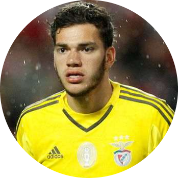

|  |
EdersonTudo sobre o Ederson Santana de Moraes, mais conhecido apenas como Ederson (Osasco, 17 de agosto de 1993), é um futebolista brasileiro que atua como goleiro. Atualmente, joga pelo Manchester City. Em 1 de junho de 2017, Ederson foi vendido pelo Benfica ao Manchester City, por 40 milhões de euros, o que fez dele, na época, o segundo goleiro mais caro da história, atrás apenas de Gianluigi Buffon. Ele também se tornou a transferência mais cara da história do Benfica, ao lado do belga Axel Witsel, que foi comprado pelo Zenit, da Rússia, em 2013, pela mesma quantia. |
| Reflexos | ⭐⭐⭐⭐ | Jogo de pés | ⭐⭐⭐⭐⭐ |
| Saídas | ⭐⭐ | Concentração | ⭐⭐⭐⭐ |